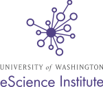
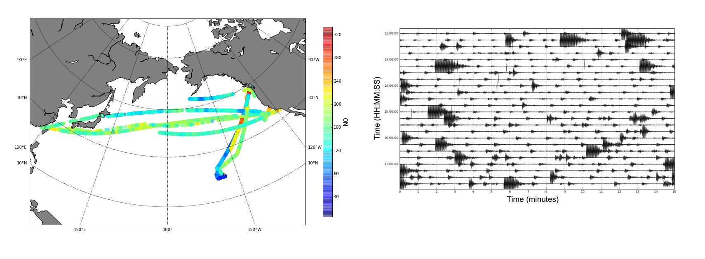
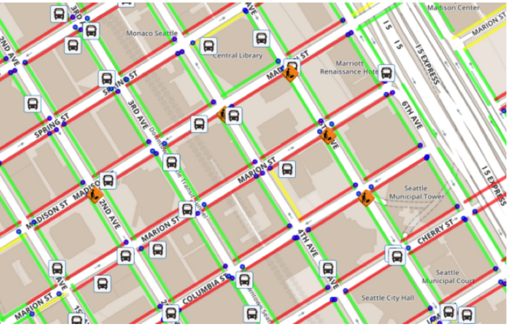
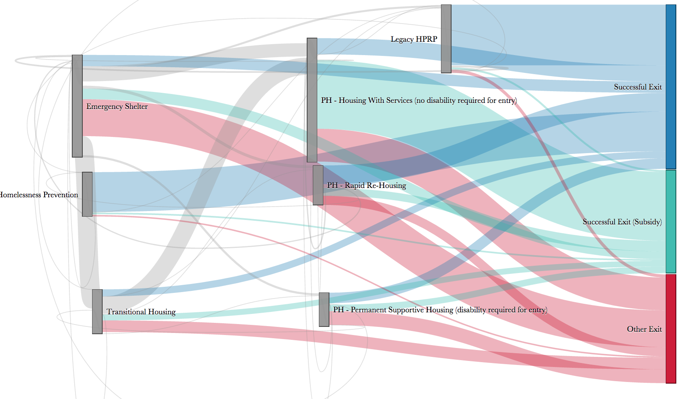
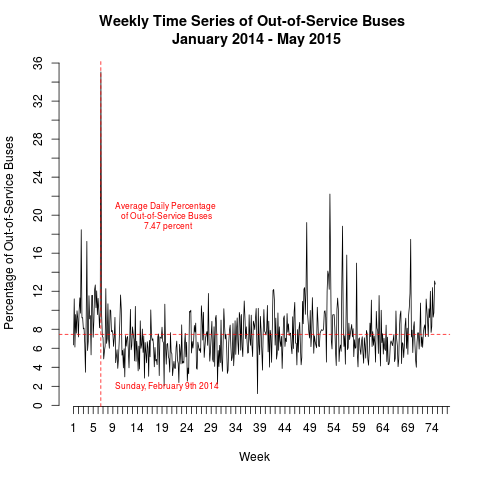

class: center, middle <a href="http://escience.washington.edu/"><img src="images/eScience_Logo_PMS.png" alt="The eScience Institute" align="middle" height="120px"></a> # Building an Urban Data Science Summer Program at the University of Washington eScience Institute --- class: center, middle <a href="http://escience.washington.edu/"><img src="images/eScience_Logo_PMS.png" alt="The eScience Institute" align="middle" height="120px"></a> --- name: layout layout: true <div class="fragment" style="position: absolute; left: 720px; top: 20px;"> <a href="http://escience.washington.edu/"></a> </div> --- # Incubator projects -- - ### Focused, intensive, collaborative projects -- - ### Data scientists + domain scientists -- - ### Results that wouldn't be possible otherwise -- </a> --- # Urban@UW <div class="fragment" style="position: absolute; left: 520px; top: 20px;"> <a href="http://escience.washington.edu/"></a> </div> -- - ### Inclusive data-driven innovation for the future of cities -- - ### Bridging organization: -- - ### Between the University and the City -- - ### Between researchers in different fields -- - ### An incubator for *translational* urban research -- - ### Educating scholars, practitioners and citizens --- # Data Science for Social Good -- ## University of Chicago, since 2012 -- ## Georgia Tech, since 2014 --- ## Provides a solution to the twin problems: -- ### How do we enable data-driven approaches in institutions devoted to social good? -- ### How do we train data-scientists interested in social good? --- ## The components: -- ### 4 projects (+ project leads!) -- ### 17 DSSG fellows (under/graduate students) -- ### 6 high school students -- ### eScience Data Scientist mentors --- ## Training in data-science: -- ### Group tutorials -- ### Individual mentorship -- ### Peer instruction and collaboration --- <a href="http://uwescience.github.io/DSSG2015-wellbeing/">Assessing Community Well-being through Open Data</a> and Social Media <img src="images/report_page.png" alt="Well-being" align="middle" height="300px"> **Project Lead**: Shelly Farnham, Third Place Technologies **DSSG Fellows**: Jordan Bates, Ryan Burns, Jenny Ho, Yue Zhou **ALVA Students**: Avery Glass, Jennifer Nino **eScience Data Scientist Mentors**: Bernease Herman, Bill Howe --- <a href="http://uwescience.github.io/DSSG_sidewalk/2015/08/28/Sidewalks-Project-Summary.html">Open Sidewalk Graph for Accessible Trip Planning</a>  **Project Leads**: Nick Bolten, Anat Caspi, Taskar Center for Accessible Technology **DSSG Fellows**: Amir Amini, Yun Hao, Vaishnavi Ravichandran, Andre Stephens **ALVA Students**: Nick Krasnoselsky, Doris Layman **eScience Data Scientist Mentors**: Anthony Arendt, Jake Vanderplas --- <a href="http://uwescience.github.io/DSSG2015-predicting-permanent-housing/">Predictors of Permanent Housing for Homeless Families</a> <a href="http://students.washington.edu/jporteno/dssg/snohomish/sankey_snohomish.html"></a> **Project Leads**: Neil Roche and Anjana Sundaram, The Bill and Melinda Gates Foundation **DSSG Fellows**: Joan Wang, Jason Portenoy, Fabliha Ibnat, Chris Suberlak **ALVA Students**: Cameron Holt, Xilalit Sanchez **eScience Data Scientist Mentors**: Bryna Hazelton, Ariel Rokem --- <a href="http://uwescience.github.io/DSSG2015-paratransit/">Rerouting Solutions and Expensive Ride Analysis for King County Paratransit</a>  **Project Lead**: Dr. Anat Caspi, Taskar Center for Accessible Technology **DSSG Fellows**: Rohan Aras, Frank Fineis, Kristen Garofali, Kivan Polimis **DREU Fellow**: Emily Andrulis, Cornell College **eScience Data Scientist Mentors**: Joseph Hellerstein, Valentina Staneva --- # This program achieved: -- ### Solutions to real problems -- ### Extremely effective Training (including "data janitorial work"...) --- # Thank you! <div style="position:absolute; left: 240px; top:150px;"> <img src="images/globe-xxl.png" width="100px;" style="background:none; border:none; box-shadow:none;"> <div style="position:absolute; left: 120px; top:40px;">http://arokem.org </div> </div> <div style="position:absolute; left: 240px; top:270px;"> <img src="images/email-11-xxl.png" width="100px;" style="background:none; border:none; box-shadow:none;"> <div style="position:absolute; left: 120px; top:40px;">arokem@gmail.com </div> </div> <div style="position:absolute; left: 240px; top:390px;"> <img src="images/twitter-xxl.png" width="100px;" style="background:none; border:none; box-shadow:none;"> <div style="position:absolute; left: 120px; top:40px;">@arokem </div> </div> <div style="position:absolute; left: 240px; top:510px;"> <img src="images/github-6-xxl.png" width="100px;" style="background:none; border:none; box-shadow:none;"> <div style="position:absolute; left: 120px; top:40px;">github.com/arokem </div>